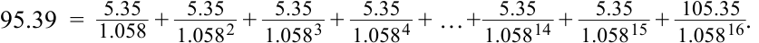
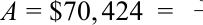
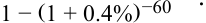
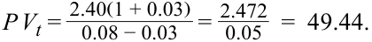
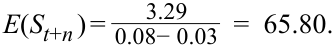
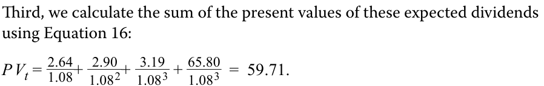

Learning Module 2 Time Value of Money in Finance - Part 4: Solutions
Volume 1: Quantitative Methods
Learning Module 2 Time Value of Money in Finance
Part 4/4: Solutions (PDF Pages 92–94)
Tập 1: Phương pháp Định lượng (Volume 1: Quantitative Methods)
Học phần 2: Giá trị Thời gian của Tiền trong Tài chính (Learning Module 2: Time Value of Money in Finance)
Phần 4/4: Lời giải Bài tập Thực hành (Solutions) (Trang PDF 92–94)
~~SOLUTIONS~~
LỜI GIẢI (SOLUTIONS)
- C is correct. The coupon payments are 5.35 (=10.7/2), the discount rate is 5.8 percent (=11.6%/2) per period, and the number of periods is 16 (=8×2). Using Equation 6, the calculation is as follows:
- C là đáp án đúng. Các khoản thanh toán coupon là $5,35$ ($= 10,7 / 2$), lãi suất chiết khấu là $5,8\%$ ($= 11,6\% / 2$) mỗi kỳ, và số kỳ là $16$ ($= 8 \times 2$). Sử dụng Phương trình 6, phép tính được thực hiện như sau:

Alternatively, using the Microsoft Excel or Google Sheets PV function ( ~~PV (0.058,16,5.35,100,0))~~ also yields a result of MXN95.39. A is incorrect. MXN95.47 is the result when incorrectly using coupon payments of 10.7, a discount rate of 11.6 percent, and 8 as the number of periods. B is incorrect. MXN97.18 is the result when using the correct semiannual coupons and discount rate, but incorrectly using 8 as the number of periods.
- A is correct. The present value of the mortgage is NZD3.75 million (=0.75×5,000,000), the periodic discount rate is 0.004 (=0.048/12), and the number of periods is 60 (=5×12). Using Equation 8,
Ngoài ra, việc sử dụng hàm PV trong Microsoft Excel hoặc Google Sheets (=PV(0.058, 16, 5.35, 100, 0)) cũng cho kết quả là $95,39\text{ MXN}$.
A không đúng. $95,47\text{ MXN}$ là kết quả khi sử dụng sai các khoản thanh toán coupon là $10,7$, lãi suất chiết khấu là $11,6\%$, và số kỳ là 8.
B không đúng. $97,18\text{ MXN}$ là kết quả khi sử dụng đúng tiền lãi coupon nửa năm và lãi suất chiết khấu nửa năm, nhưng lại sử dụng sai số kỳ là 8.
0.4% (NZD3, 750, 000)
- A là đáp án đúng. Giá trị hiện tại của khoản vay thế chấp là $3,75\text{ triệu NZD}$ ($= 0,75 \times 5.000.000$), lãi suất chiết khấu định kỳ là $0,004$ ($= 0,048 / 12$), và số kỳ là $60$ ($= 5 \times 12$). Sử dụng Phương trình 8:


Alternatively, the spreadsheet PMT function may be used with the inputs stated earlier.
Ngoài ra, hàm PMT trên bảng tính có thể được sử dụng với các thông số đầu vào đã nêu ở trên.
B is incorrect. NZD93,899 is the result if NZD5 million is incorrectly used as the present value term.
B không đúng. $93.899\text{ NZD}$ là kết quả nếu sử dụng sai $5\text{ triệu NZD}$ làm giá trị hiện tại.
C is incorrect. NZD71,781 is the result if the calculation is made using 4.8 percent as the rate and 5 as the number of periods, then the answer is divided by 12.
C không đúng. $71.781\text{ NZD}$ là kết quả nếu phép tính được thực hiện bằng cách sử dụng $4,8\%$ làm lãi suất và 5 làm số kỳ, sau đó lấy đáp số chia cho 12.
- B is correct. Mylandia’s next expected dividend is CAD2.472 (=2.40×1.03), and using Equation 14,
- B là đáp án đúng. Cổ tức dự kiến tiếp theo của Mylandia là $2,472\text{ CAD}$ ($= 2,40 \times 1,03$), và sử dụng Phương trình 14:

- C is correct. Following the first step, we observe the following expected dividends for Mylandia for the next three years:
In 1 year: D1 = CAD2.64 (=2.40×1.10)
- C là đáp án đúng. Thực hiện theo bước đầu tiên, chúng ta quan sát thấy các khoản cổ tức dự kiến của Mylandia trong ba năm tới như sau:
- Sau 1 năm: $D_1 = \text{2,64 CAD}$ ($= 2,40 \times 1,10$)
- Sau 2 năm: $D_2 = \text{2,90 CAD}$ ($= 2,40 \times 1,10^2$)
- Sau 3 năm: $D_3 = \text{3,19 CAD}$ ($= 2,40 \times 1,10^3$)
In 2 years: D2 = CAD2.90 (=2.40×1.102 ) In 3 years: D3 = CAD3.19 (=2.40×1.103 )
The second step involves a lower 3 percent growth rate. At the end of year four, Mylandia’s dividend ( D4 ) is expected to be CAD3.29 (=2.40×1.103 ×1.03). At this time, Mylandia’s expected terminal value at the end of three years is CAD65.80 using Equation 17, as follows:
Bước thứ hai liên quan đến tốc độ tăng trưởng thấp hơn ở mức $3\%$. Vào cuối năm thứ tư, cổ tức của Mylandia ($D_4$) dự kiến là $3,29\text{ CAD}$ ($= 2,40 \times 1,10^3 \times 1,03$). Tại thời điểm này, giá trị cuối kỳ dự kiến (expected terminal value) của Mylandia vào cuối năm thứ ba là $65,80\text{ CAD}$ khi sử dụng Phương trình 17, như sau:


- C is correct. The FV of the bond is CHF95.25, the PV is CHF89, and the number of annual periods ( t ) is 3. Using Equation 18,
Thứ ba, chúng ta tính tổng giá trị hiện tại của các khoản cổ tức dự kiến này bằng cách sử dụng Phương trình 16:
- C là đáp án đúng. $\text{FV}$ của trái phiếu là $95,25\text{ CHF}$, $\text{PV}$ là $89\text{ CHF}$, và số kỳ hàng năm ($t$) là 3. Sử dụng Phương trình 18:
2.29 percent = (92.25/89)(1/3) − 1.
A is incorrect as the result is derived using t of 12. B is incorrect as this result is derived using a PV of CHF95.25 and an FV of 100.
(Lưu ý: Trong bản gốc tiếng Anh ghi nhầm số hiển thị là 92.25/89 nhưng kết quả tính từ 95.25/89 đúng bằng $2,29\%$.).
- A is correct. The YTM is calculated by solving for the RATE spreadsheet function with the following inputs: number of periods of 12 (=6 × 2), coupon payments of 5.35 (=10.7/2), PV of −97.50, and FV of 100. The resulting solution for RATE of 5.64 percent is in semiannual terms, so multiply by 2 to calculate annualized YTM of 11.28 percent.
A không đúng vì kết quả này được suy ra khi sử dụng $t = 12$. B không đúng vì kết quả này được suy ra khi sử dụng $\text{PV}$ là $95,25\text{ CHF}$ và $\text{FV}$ là 100 (cho 9 năm còn lại).
B is incorrect, as 11.50 percent is the result if number of periods used is eight, instead of 12. C is incorrect, as 11.71 percent is the result if the number of periods used is 6, instead of 12.
- A là đáp án đúng. YTM được tính bằng cách giải hàm RATE trên bảng tính với các thông số đầu vào sau: số kỳ là $12$ ($= 6 \times 2$), khoản thanh toán coupon là $5,35$ ($= 10,7 / 2$), $\text{PV}$ là $-97,50$, và $\text{FV}$ là $100$. Kết quả giải hàm RATE là $5,64\%$ tính theo kỳ nửa năm, vì vậy nhân với 2 để tính ra YTM quy đổi theo năm là $11,28\%$.
- C is correct. We may solve for required return based upon the assumption of constant dividend growth using Equation 21:
B không đúng, vì $11,50\%$ là kết quả nếu số kỳ sử dụng là 8 thay vì 12. C không đúng, vì $11,71\%$ là kết quả nếu số kỳ sử dụng là 6 thay vì 12.
r_ =2.40 (1.03) + 0.03 = 0.0712 . 60
- C là đáp án đúng. Chúng ta có thể giải tìm tỷ suất sinh lợi yêu cầu dựa trên giả định cổ tức tăng trưởng không đổi bằng cách sử dụng Phương trình 21:
B is incorrect as 7.00 percent is the result if we use the previous dividend of CAD2.40 instead of the next expected dividend. A is incorrect as 8.00 percent is simply the required return assumed from one of the Mylandia examples in Question Set 1 in which the price is solved to be a lower value.
B không đúng vì $7,00\%$ là kết quả nếu chúng ta sử dụng khoản cổ tức trước đó là $2,40\text{ CAD}$ thay vì khoản cổ tức dự kiến tiếp theo. A không đúng vì $8,00\%$ đơn giản là tỷ suất sinh lợi yêu cầu được giả định từ một trong các ví dụ trước của Mylandia trong đó mức giá giải ra có giá trị thấp hơn.
- B is correct. Using Equation 24, the previous input results in the following inequality:
_0.50 15 < 0.075− 0.045= 16.67 .
- B là đáp án đúng. Sử dụng Phương trình 24, các thông số đầu vào trên dẫn đến bất đẳng thức sau:
The above inequality implies that the analyst should view the NIFTY 50 as priced too low. The fundamental inputs into the equation imply a forward price to earnings ratio of 16.67 rather than 15. An alternative approach to answering the question would be to solve for implied growth using the observed forward price to earnings ratio of 15 and compare this to the analyst’s growth expectations:
Bất đẳng thức trên hàm ý rằng nhà phân tích nên xem chỉ số NIFTY 50 là đang được định giá quá thấp (underpriced). Các thông số cơ bản đưa vào phương trình hàm ý một hệ số giá trên thu nhập dự phóng là $16,67$ thay vì $15$. Một cách tiếp cận khác để trả lời câu hỏi này là giải tìm tốc độ tăng trưởng ngầm định bằng cách sử dụng hệ số giá trên thu nhập dự phóng quan sát được là 15 và so sánh con số này với kỳ vọng tăng trưởng của nhà phân tích:
_ 15 =0.50 0.075− g.
Giải tìm $g$ cho kết quả là $4,1667\%$. Vì nhà phân tích kỳ vọng tốc độ tăng trưởng cổ tức của NIFTY 50 cao hơn ở mức $4,50\%$, nên chỉ số này được xem là đang bị định giá thấp (underpriced).
Solving for g yields a result of 4.1667 percent. Since the analyst expects higher NIFTY 50 dividend growth of 4.50 percent, the index is viewed as underpriced.
- C là đáp án đúng. Sử dụng nguyên lý cộng dòng tiền (cash flow additivity), hãy so sánh hai cơ hội đầu tư bằng cách lấy Cơ hội 1 trừ đi Cơ hội 2, thu được các dòng tiền sau:
- C is correct. Using cash flow additivity, compare the two opportunities by subtracting Opportunity 2 from Opportunity 1 yielding the following cash flows:
| Dòng tiền (nghìn USD) | $t = 0$ | $t = 1$ | $t = 2$ | $t = 3$ |
|---|---|---|---|---|
| Cơ hội 1 – Cơ hội 2 | 0 | −30 | 0 | 34,992 |
Opportunity 1 – Opportunity 2 0 −30 0 34.992
Việc tìm giá trị hiện tại của các dòng tiền trên ở mức lãi suất chiết khấu $8\%$ cho thấy cả hai cơ hội đầu tư có cùng giá trị hiện tại (vì $-30/1,08 + 34,992/1,08^3 = 0$). Do đó, hai cơ hội này hoàn toàn giống hệt nhau về mặt kinh tế, và không có sự ưu tiên rõ ràng nào cho cơ hội này hơn cơ hội kia.
Finding the present value of the above cash flows at 8 percent discount rate shows that both investment opportunities have the same present value. Thus, the two opportunities are economically identical, and there is no clear preference for one over the other.
- C là đáp án đúng. Lãi suất kỳ hạn một năm (one-year forward rate) phản ánh lãi suất tái đầu tư hòa vốn kỳ hạn một năm bắt đầu sau một năm kể từ bây giờ, được tính như sau:
- C is correct. The one-year forward rate reflects the breakeven one-year reinvestment rate in one year, computed as follows: F 1,1 = (1+ r 2)2 /(1+ r 1) – 1,
- F 1,1 = (1.0129)2 /(1.0073) – 1 = 0.0185.
- A is correct. To avoid arbitrage opportunities in exchanging euros and US dollars, investors must be able to lock in a one-year forward exchange rate of USD/
- A là đáp án đúng. Để tránh các cơ hội kinh doanh chênh lệch giá khi chuyển đổi giữa đồng euro và đồng đô la Mỹ, các nhà đầu tư phải có khả năng khóa chặt một mức tỷ giá hối đoái kỳ hạn một năm là $1,051\text{ USD/EUR}$ ngay hôm nay. Phương pháp giải được trình bày dưới đây:
EUR1.051 today. The solution methodology is shown below. In one year, a single unit of euro invested risk-free is worth EUR1.0075 (=e0.0075 ). In one year, a single unit of euro converted to US dollars and then invested risk-free is worth USD1.0589 (=1.025*e0.0325 ).
To convert USD1.0589 into EUR1.0075 requires a forward exchange rate of USD/ EUR1.051 (=1.0589/1.0075).
- Sau một năm, một đơn vị đồng euro được đầu tư phi rủi ro có giá trị là $1,0075\text{ EUR}$ ($= e^{0,0075}$).
- Sau một năm, một đơn vị đồng euro được chuyển đổi sang đô la Mỹ và sau đó được đầu tư phi rủi ro có giá trị là $1,0589\text{ USD}$ ($= 1,025 \times e^{0,0325}$).
- A is correct. Regardless of whether the stock increases or decreases in price, the investor’s portfolio has a value of USD7.50 as follows:
Để chuyển đổi $1,0589\text{ USD}$ thành $1,0075\text{ EUR}$ đòi hỏi một tỷ giá hối đoái kỳ hạn là $1,051\text{ USD/EUR}$ ($= 1,0589 / 1,0075$).
If stock price goes to USD35, value = 0.5×35 – 10 = 7.50.
- A là đáp án đúng. Bất kể giá cổ phiếu tăng hay giảm, danh mục đầu tư của nhà đầu tư đều có giá trị là $7,50\text{ USD}$ như sau:
- Nếu giá cổ phiếu tăng lên $35\text{ USD}$, giá trị danh mục $= 0,5 \times 35 - 10 = 7,50\text{ USD}$.
- Nếu giá cổ phiếu giảm xuống $15\text{ USD}$, giá trị danh mục $= 0,5 \times 15 - 0 = 7,50\text{ USD}$.
If stock price goes to USD15, value = 0.5×15 – 0 = 7.50.
If the stock price rises to USD35, the sold call option at USD25 has a value to the buyer of USD10, offsetting the rise in the stock price.
Nếu giá cổ phiếu tăng lên $35\text{ USD}$, quyền chọn mua đã bán ở mức giá thực hiện $25\text{ USD}$ sẽ có giá trị đối với người mua quyền chọn là $10\text{ USD}$ (do đó là khoản nghĩa vụ $-10\text{ USD}$ đối với người bán quyền chọn), bù trừ với mức tăng của giá cổ phiếu.